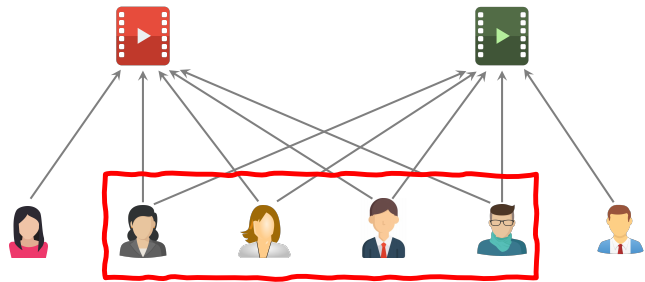
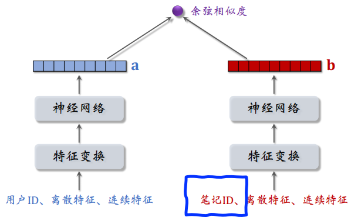
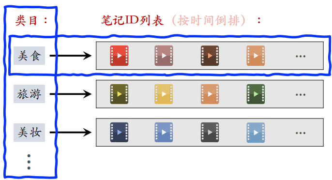
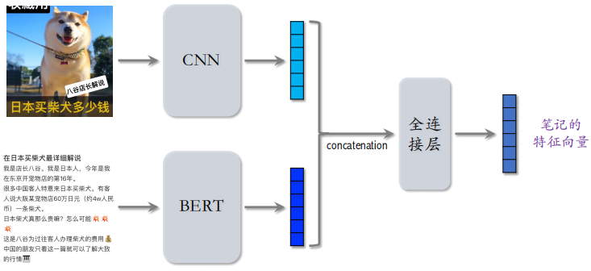
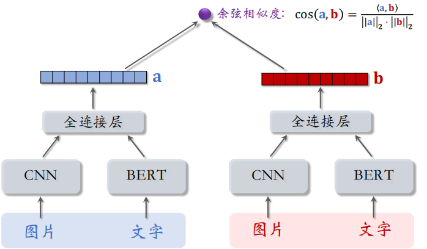
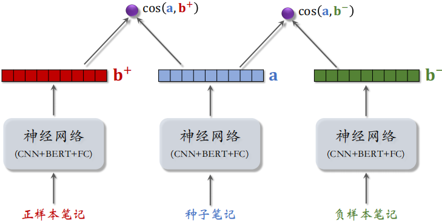

WSS推荐系统学习笔记9：物品冷启动1
1 优化目标&评价指标
UGC 比 PGC 更难，因为用户上传的内容质量良莠不齐，而且量很大，很难用人工去评判，很难让运营人员去调控。
为什么要特殊对待新笔记？因为新笔记刚刚那个发布，缺少与用户的交互，导致推荐的难度大、效果差。此外，扶持新发布、低曝光的笔记，可以增强作者发布意愿。
优化冷启的目标：
- 精准推荐：克服冷启的困难，把新笔记推荐给合适的用户，不引起用户反感。
- 激励发布：流量向低曝光新笔记倾斜，激励作者发布。
- 挖掘高潜：通过初期小流量的试探，找到高质量的笔记，给予流量倾斜。
冷启动的评价指标主要包含作者侧、用户侧和内容侧：
- 作者侧指标：发布渗透率、人均发布量。
- 用户侧指标：
- 新笔记指标：新笔记的点击率、交互率。
- 大盘指标：消费时长、日活、月活。
- 内容侧指标：高热笔记占比，可以反应出冷启是否能挖掘出优质笔记。
作者侧和用户侧指标是工业界通用的，技术比较好的大厂都会用这两类指标。内容侧指标只有少数几家在用。
冷启动的优化点为优化全链路（包括召回和排序）和流量调控（流量怎么在新物品、老物品中分配）。
1.1 作者侧指标
作者侧指标主要有发布渗透率和人均发布量。
1.1.1 发布渗透率
发布渗透率 = 当日发布人数 / 日活人数
在某一天，用户成为作者的比例就称为发布渗透率。一个用户只要发布⼀篇或以上，就算⼀个发布人数。
例如，当日发布人数 = 100万，日活人数 = 2000万，则发布渗透率 = 100 / 2000 = 5%。
1.1.2 人均发布量
人均发布量 = 当日发布笔记数 / 日活人数
例如，每日发布笔记数 = 200万，日活人数 = 2000万，则人均发布量 = 200 / 2000 = 0.1。
有时，一个作者一天可能发布多个笔记，这不影响发布渗透量，但是会影响人均发布量。
发布渗透率、人均发布量反映出作者的发布积极性。冷启的重要优化目标是提高作者的积极性，促进发布，增大内容池。新笔记获得的曝光越多，首次曝光和交互出现得越早，作者发布积极性越高。所以要把流量向新笔记倾斜，让新笔记获得更多的曝光。同时也要优化新笔记的链路，让新笔记出现交互尽量快。
1.2 用户侧指标
用户侧指标主要有新笔记的消费指标和大盘指标。
1.2.1 新笔记的消费指标
新笔记的的消费指标主要有点击率、交互率。但是由于曝光的基尼系数很大，少数头部新笔记占据了大部分的曝光。整体的消费指标不能反映出大部分新笔记的情况。
所以最好是把高曝光和低曝光新笔记分开，分别考察它们的消费指标：
- 高曝光：比如 > 1000 次曝光
- 低曝光：比如 < 1000 次曝光
1.2.2 大盘消费指标
另一类用户侧指标是大盘消费指标，也就是不区分新笔记和老笔记，做新笔记推荐的实验的时候，要考虑大盘的消费时长、日活、月活等指标。
在优化冷启时，不是要提高大盘的消费指标，而是要确保新的策略不会显著伤害大盘的指标。
大力扶持低曝光新笔记会发生什么？
- 作者侧发布指标变好
- 用户侧大盘消费指标变差
1.3 内容侧指标
还有一类叫做内容侧指标，有的大厂会考察此类指标。内容侧指标主要是高热笔记占比，高热笔记可以定义为前 30 天获得 1000+ 次点击。
高热笔记占比越高，说明冷启阶段挖掘优质笔记的能力越强。
2 简单的召回通道
新笔记自带图片、文字、地点以及算法或人工标注的标签。但是新笔记没有用户点击、点赞等信息，同时也没有笔记 ID embedding，缺少这个特征会对召回带来很大的困难。
冷启召回的困难：
- 缺少用户交互，还没学好笔记 ID embedding，导致双塔模型效果不好。
- 缺少用户交互，导致 ItemCF 不适用。
ItemCF 不适用于物品冷启动
ItemCF 做召回的原理是判断两篇笔记的相似度有多高，要根据与笔记交互过的用户来判定两篇笔记的相似度。下图中红色框内的用户与两篇笔记都有交互，是重合的。两个笔记的用户重合度越高，说明两篇笔记的相似度越高。
但是新笔记还没有和任何用户进行交互，所以不能计算和其他笔记的相似度，所以 ItemCF 不适用于冷启动。

召回通道：
- ItemCF召回（不适用）
- 双塔模型（改造后适用）
- 类目、关键词召回（适用）：在笔记刚发布时最有用
- 聚类召回（适用）
- Look-Alike 召回（适用）
2.1 双塔模型
由于新笔记的 ID Embedding 需要从用户和笔记的交互中学习，但是新笔记还没有和用户交互过，所以这个嵌入还没有学好，直接用双塔模型做新笔记的召回效果不是很好。

2.1.1 ID Embedding
改进方案 1：新笔记使用 default embedding。
物品塔做 ID embedding 时，让所有新笔记共享⼀个 ID，而不是用自己真正的 ID。
Default embedding：共享的 ID 对应的 embedding 向量。这个默认嵌入是学出来的，而不是全零初始化或默认初始化。新笔记发布之后逐渐会有点击和交互，到下次模型训练的时候，新笔记才有自己的 ID embedding 向量。
改进方案 2：利用相似笔记 embedding 向量。
查找 top k 内容最相似的高曝笔记。把 个高曝笔记的 embedding 向量取平均，作为新笔记的 embedding。之所以用高曝光笔记，是因为它们的 ID embedding 学的比较好。
2.1.2 多个向量召回池
多个召回池，让新笔记有更多曝光机会。
- 1 小时新笔记
- 6 小时新笔记
- 24 小时新笔记
- 30 天笔记
上面这些召回池都共享同⼀个双塔模型，那么多个召回池不增加训练的代价。
2.2 类目召回
凡是做信息流社交电商的互联网公司，都是维护每一个用户的画像，画像中记录了用户的兴趣点，比如感兴趣的类目和关键词，这些类目和关键词可以用于召回。
系统维护类目索引：类目 → 笔记列表（按时间倒排），要用这个索引召回新笔记。之后在做召回时，取出用户感兴趣的类目。然后用类目索引做召回：用户画像 → 类目 → 笔记列表，取回笔记列表上前 篇笔记（即最新的 篇）。

2.3 关键词召回
关键词召回和类目召回类似，唯一的区别是用关键词代替类目。系统维护关键词索引：关键词 → 笔记列表（按时间倒排），然后根据用户画像上的关键词做召回。
类目召回和关键词召回的缺点：
- 只对刚刚发布的新笔记有效：取回某类目/关键词下最新的 篇笔记，发布几小时之后，就再没有机会被召回
- 弱个性化，不够精准：按照用户感兴趣的类目或关键词是很宽泛的
3 聚类召回
聚类召回在物品冷启动的时候特别有用。
3.1 基本思想
如果用户喜欢⼀篇笔记，那么他会喜欢内容相似的笔记。可以事先训练⼀个神经网络，基于笔记的类目和图文内容，把笔记映射到向量。
对笔记向量做聚类，划分为 1000 cluster，记录每个 cluster 的中心方向（k-means 聚类，用余弦相似度）。
3.1.1 聚类索引
当⼀篇新笔记发布之后，用神经网络把它映射到⼀个特征向量。然后把这个向量从 1000 个向量（对应 1000 个 cluster）中找到最相似的向量，作为新笔记的 cluster。
把新笔记的 ID 添加到索引上，索引是从 cluster 到笔记 ID 列表（按时间倒排）。
3.1.2 线上召回
当用户在刷小红书发起推荐请求，此时系统根据用户 ID，找到他的 last-n 交互的笔记列表，把这些笔记作为种子笔记，去召回相似的笔记。
用神经网络把每篇种子笔记映射到向量，寻找最相似的 cluster（这样知道了用户对哪些 cluster 感兴趣）。之后从每个 cluster 的笔记列表中，取回最新发布的 篇笔记，最多取回 篇笔记。
3.2 内容相似度模型
3.2.1 提取图文特征
用 CNN 提取图片的特征输出一个向量，用 BERT 提取文字的特征输出一个向量，把这两个向量做拼接，然后输入全连接层，最后得到笔记的特征向量。这个向量是对笔记图文特征的表征。

3.2.2 两篇笔记内容相似度
把左边的笔记送入刚才的神经网络，得到这个笔记的特征向量 ，同样的操作，把右边的笔记也送入神经网络，得到特征向量 ，这两个神经网络是相同的。
最后计算向量 和 的余弦相似度 。

3.2.3 训练内容相似度模型
每个训练样本都是一个三元组：< 正样本，种子样本，负样样本 >。把这三个样本送入神经网络，神经网络的参数都是相同的，然后得到向量 、 和 ，分别计算 和 。
做训练的目标：鼓励 大于
Triplet hinge loss：
Triplet logistic loss：

3.2.4 正负样本的选取
< 种子笔记，正样本 >
方法一：人工标注⼆元组的相似度，但是人工标注的代价太大
方法二：算法自动选正样本，可以设置如下的筛选条件
- 只用高曝光笔记作为⼆元组（因为有充⾜的用户交互信息）
- 两篇笔记有相同的⼆级类目，比如都是“菜谱教程”
最后用用 ItemCF 的物品相似度选正样本。
< 种子笔记，负样本 >
负样本的选择很容易，直接从全体笔记中随机选出下列满足条件的即可：
- 字数较多（神经网络提出的文本信息有效）
- 笔记质量高，避免图文无关
3.3 总结
基本思想：根据用户的点赞、收藏、转发记录，推荐内容相似的笔记。
- 线下训练：多模态神经网络把图文内容映射到向量
- 线上服务：用户喜欢的笔记 → 特征向量 → 最近的 Cluster → 新笔记
 微信
微信 支付宝
支付宝